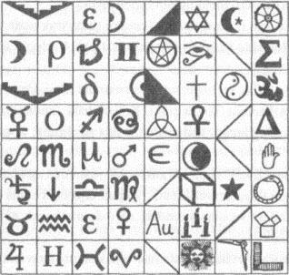

101. BÖLÜM
Katherine ağlayarak, “Onu dışarı çıkarmalısın!” diye yalvardı. “Ne istersen yapacağız!” Sular sandığın içine dolarken Langdon’ın daha da şiddetli yumrukladığını duyabiliyordu.
Dövmeli adam, gülümsedi. “Sen ağabeyinden daha kolaysın. Sırlarını bana anlatması için Peter’a yapmak zorunda kaldıklarım...”
Katilerine, “O nerede?” diye sordu. “Peter nerede?! Söyle bana! Ne istiyorsan onu yaptık! Piramidi çözdük ve...”
“Hayır, piramidi çözmediniz. Oyun oynadınız. Bilgiyi benden saklayıp, evime bir hükümet ajanı getirdiniz. Bu davranışı ödüllendireceğimi sanmıyorum.”
Hıçkırıklara boğulan Katherine, “Başka seçeneğimiz yoktu,” dedi. “CIA seni arıyor. Yanımıza bir ajan verdiler. Sana her şeyi anlatacağım. Robert’ı çıkart!” Katherine, Langdon’ın sandığın içinde bağırıp, yumrukladığını duyabiliyor ve suyun borunun içinden akmaya devam ettiğini görebiliyordu. Fazla vakti olmadığının farkındaydı.
Önünde duran dövmeli adam, çenesini okşayarak sakin bir tonla konuşuyordu. “Herhalde Franklin Meydanı’nda beni bekleyen ajanlar vardır, öyle değil mi?”
Katherine hiçbir şey söylemeyince adam iri ellerini onun omuzlarına koyup, yavaşça kendine doğru çekti. Kolları hâlâ sandalyenin arkasında tellerle bağlı olduğundan, kadının omuzları gerilirken, kopacakmış gibi acıyla yandı.
Katherine, “Evet!” dedi. “Franklin Meydanı’nda ajanlar var!”
Adam, onu daha kuvvetli çekti. “Kapak taşındaki adres ne?”
Bileklerindeki ve omuzlarındaki ağrı dayanılmazdı ama Katherine bir şey söylemedi.
“Şimdi de söyleyebilirsin Katherine veya kollarını kırar tekrar sorarım.”
Acıyla soluk alırken, “Sekiz!” dedi. “Eksik sayı sekiz! Kapak taşında: ‘Sır Düzen’in içinde saklı - Sekiz Franklin Meydanı!’ yazıyor. Yemin ederim. Sana başka ne söyleyeceğimi bilmiyorum! Sekiz Franklin Meydanı!”
Adam omuzlarını bırakmıyordu.
Katherine, “Tüm bildiğim bu!” dedi. “Adres bu! Beni bırak! Robert’ı o hücreden çıkart!”
Adam, “Yapardım...” dedi. “Ama bir sorun var. Yakalanmadan Sekiz Franklin Meydanı’na gidemem. Bana o adreste ne olduğunu söyle.”
“Bilmiyorum!”
“Peki piramidin tabanındaki sembol ne? Alt kısmındaki? Anlamını biliyor musun?”
“Tabanda ne sembolü var?” Katherine onun neden bahsettiğini bilmiyordu. “Tabanda sembol falan yok. Dümdüz, boş taş!”
Tabut benzeri sandıktan gelen boğuk imdat çağrılarına alıştığı anlaşılan dövmeli adam, sakince Langdon’ın çantasının yanına gidip, piramidi çıkardı. Sonra Katherine’in yanına dönüp, tabanını görebilmesi için tam gözünün önünde tuttu.
Katherine kazınmış sembolleri görünce, hayretle soluğunu yuttu.
Ama... bu imkânsız!

Piramidin tüm tabanı karmakarışık oymalarla doluydu. Orada daha önce hiçbir şey yoktu! Buna eminim! Bu sembollerin ne anlama gelebileceğine dair, hiçbir fikri yoktu. Her türlü mistik geleneği kapsıyor gibiydiler. Katherine içlerinden pek çoğunu tanımıyordu bile.
Tam bir karmaşa.
“Bunun ne anlama geldiğini... bilmiyorum.”
Adam, “Ben de,” dedi. “Neyse ki elimizde bir uzman var.” Sandığa bir göz attı. “Ona soralım, olmaz mı?” Piramidi sandığın yanına taşıdı.
Katherine kısa süren bir ümitle, kapağın kilidini açacağını sandı. Ama adam sakince kutunun üstüne oturup, yan taraftaki küçük bir paneli kaydırdı ve sandığın üstündeki pleksiglas pencereyi ortaya çıkardı.
Işık!
Langdon gözlerini kısarak yukarıdan gelen ışık huzmesine baktı. Gözleri ışığa alışınca, ümidi yerini akıl karışıklığına bıraktı. Sandığın üst kısmındaki pencere gibi bir şeye bakıyordu. Bu pencereden beyaz tavanı ve floresan ışığını gördü.
Aniden dövmeli yüz üstünde belirip, ona yukarıdan baktı.
Langdon, “Katherine nerede?” diye bağırdı. “Çıkar beni!”
Adam gülümsedi. “Arkadaşın Katherine burada, benimle,” dedi. “Onun hayatını kurtaracak güç bende. Seninkini de öyle. Ama senin vaktin kısıtlı, bu yüzden dikkatle dinlemeni öneririm.”
Langdon, onu camın arkasından güçlükle duyabiliyordu. Göğsüne yaklaşan su, biraz daha yükselmişti.
Adam, “Piramidin tabanında semboller olduğunun farkında mısın?” diye sordu.
Yukarıdayken yerde yatan piramidin tabanındaki semboller dizisini görmüş olan Langdon, “Evet!” diye bağırdı. “Ama ne oldukları hakkında fikrim yok! Sekiz Franklin Meydanı’na gitmelisin! Cevap orada! Kapak taşında...”
“Profesör, CIA’in orada beni beklediğini ikimiz de biliyoruz. Tuzağa düşmeye hiç niyetim yok. Ayrıca, zaten sokak numarası da gerekmiyor. O meydanda uygun olabilecek tek bir bina var, o da Almas Shrine Temple.” Bakışlarını Langdon’a indirip sustu. “Mistik Tapınağın Soylularının Kadim Arabi Tarikatı.”
Langdon’ın aklı karışmıştı. Almas Shrine Temple’ı biliyordu ama Franklin Meydanı’nda olduğunu unutmuştu. ‘Düzen’den kasıt ‘Shriners' mıydı? Tapmaktan, gizli bir merdivenin üstünde mi duruyor? Tarihi açıdan hiç anlam ifade etmiyordu ama Langdon şu anda tarihi tartışabilecek bir durumda değildi. “Evet!” diye bağırdı. “Orası olmalı! Sır Düzen’in içinde gizli!” “O binayı biliyor musun?”
“Kesinlikle!” Langdon kulaklarını yükselen suyun üstünde tutmak için zonklayan başını kaldırdı. “Sana yardım edebilirim! Çıkar beni!”
“Yani piramidin tabanındaki sembollerle bu binanın ne ilgisi olduğunu bana söyleyebilir misin?”
“Evet! Bırak sembollere bakayım!”
“Çok iyi o zaman. Bakalım ne bulacaksın!”
Acele et! Sıcak sıvı etrafında yükselirken, Langdon adamın kilidi açacağı beklentisiyle kapağı yukarı itti. Lütfen! Çabuk! Ama kapak açılmadı. Bunun yerine piramidin tabam pleksiglas pencerede belirdi.
Langdon panik içinde baktı.
“Herhalde buradan yeterince yakındır?” Adam piramidi dövmeli elleriyle tutuyordu. “Hızlı düşün profesör. Tahminimce altmış saniyeden az vaktin var.”